00-淘宝网的十年架构
如下的内容，会是大家后面很长一段时间需要学习的具体知识点内容，甚至是你工作几年后都会要做的内容，也就是维护不同的运维架构；
本节以了解网站架构为主，先有整体的运维架构学习大框架理念，不要求完全理解，这是至少有五年工作经验，整合而来的架构理念知识。
后续再跟着于超老师，逐步学习，每一个架构下的技术细节即可。
这个架构是非常有魅力的，见证了一个互联网公司的诞生、传奇故事，也是技术人为之向往的天花板。
你能把这一套架构，在心中捋顺了，学会了，清晰的表达出来，以及未来在工作上实践应用，你就把简历改为，运维架构师吧。😁
既然是开始学习了网站架构篇、你得对这个网站发展史有一些了解，当然是从运维架构角度去看待，技术是如何发展至今的。
在90年代初第一个网站的出现后，互联网站发展至今已有了巨大的变化，全球有一半的人口使用互联网，人们的生活因为互联网有了巨大的改变。
从百度、谷歌等信息搜索；
从淘宝、京东网上购物到斗鱼、虎牙文化娱乐，互联网渗透人们的每个角落，且这种趋势还在加速；
在互联网飞跃发展的过程里，电子商务的便捷背后缺是不堪重负的网站架构，一些B2C（Business to customer，指网络零售行业）的网站逢促销必然宕机；
铁道部电子购票网站频繁的故障和延迟更是把这种现象表现的淋漓尽致。
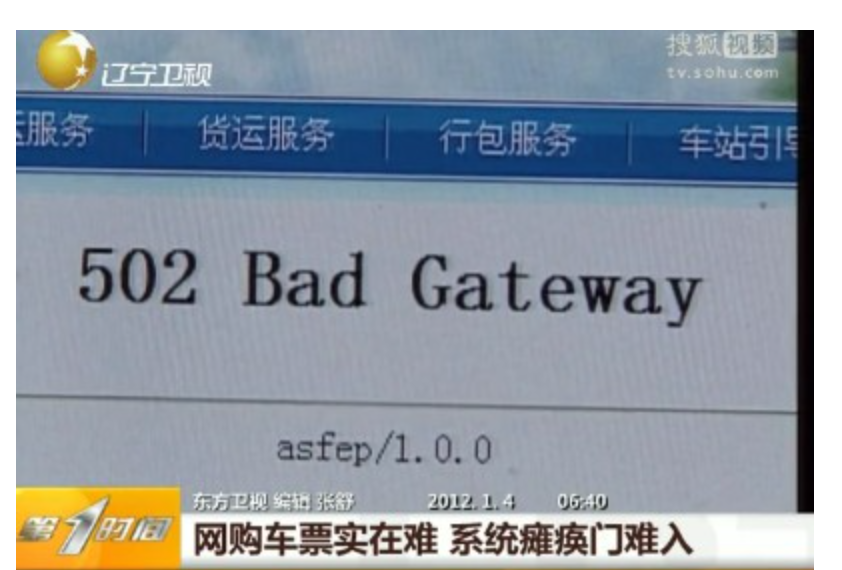
一边是企业在网站技术上的投入，一边网站却在关键时刻，频繁宕机；
一边程序员夜以继日的加班，一边网站新功能上线故障，导致功能延缓上线；
一边是互联网业务快速发展挑战传统行业，一般是网站安全漏洞让网民胆战心惊；
打造一个高可用、高性能、易扩展、可伸缩且安全的网站，这是技术人员必须攻克，解决的难关。
大型网站架构特点（淘宝网）
和传统企业应用系统相比，大型网站系统具备如下特点：
- 高并发，大流量：需要扛得住高并发，大流量的用户访问。Google日均PV数35亿，日均IP访问数3亿；腾讯QQ同时在线用户数过亿；淘宝双11当天活动交易额过百亿，活动开始的第一分钟独立访问用户数达千万
- 高可用：网站系统需要7*24小时不间断提供服务，大型网站的宕机事件通常都会成为新闻焦点，例如百度域名曾被黑客劫持无法访问。
- 海量数据，高可用数据库：需要存储，管理海量数据，使用大量的服务器
- 世界各地用户分布广泛，网络环境复杂：大型网站都是为全球用户提供服务，全球各地网络环境千差万别，即使国内也有多个运营商网络互通难的问题，面对海外用户还得假设海外数据中心。
- 服务器安全问题：互联网的开放性，很容易受到黑客攻击，需要保护服务器安全，保证数据安全。
- 需求快速变更，发布频繁：和传统应用比较不同，互联网产品为了快速满足市场需求，产品发布率很高，一天内网站发布几十次已是正常。
- 渐进式发展：即使是世界级大型网站，也都是由小型架构慢慢演变而来，如阿里巴巴本是在马云家中客厅诞生。
基本架构名词
在介绍架构演进之前，你需要先有一些基本的名词理解
单体应用架构
单机就是所有的业务全部写在一个项目中，部署服务到一台服务器上，所有的请求业务都由这台服务器处理，无论是开发代码、还是运维部署、都比较简单粗暴，重启搞定一切。
显然，当业务增长到一定程度的时候，服务器的硬件会无法满足业务需求。自然而然地想到一个程序不行就部署多个喽，就是集群。
集群架构
单机处理到达瓶颈的时候，你就把单机复制几份，这样就构成了一个“集群”。
集群中每台服务器就叫做这个集群的一个“节点”，所有节点构成了一个集群。
每个节点都提供相同的服务，那么这样系统的处理能力就相当于提升了好几倍（有几个节点就相当于提升了几倍）。
集群中的一个节点掉线时，也不会影响到整体的集群业务。
负载均衡
但问题是用户的请求究竟由哪个节点来处理呢？最好能够让此时此刻负载较小的节点来处理，这样使得每个节点的压力都比较平均。
要实现这个功能，就需要在所有节点之前增加一个“调度者”的角色，用户的所有请求都先交给它，然后它根据当前所有节点的负载情况，决定将这个请求交给哪个节点处理。
这个“调度者”有个牛逼了名字——负载均衡服务器。
负载均衡：协调集群里的每个节点均衡地接受业务请求。
通俗的讲就是服务A和服务B相同时间段内处理的同类业务请求数量是相似的。
高可用
集群系统中部分节点失效时，其他节点能够接替它继续提供服务，则可认为系统具有高可用性。
图解架构升级（单体>集群）
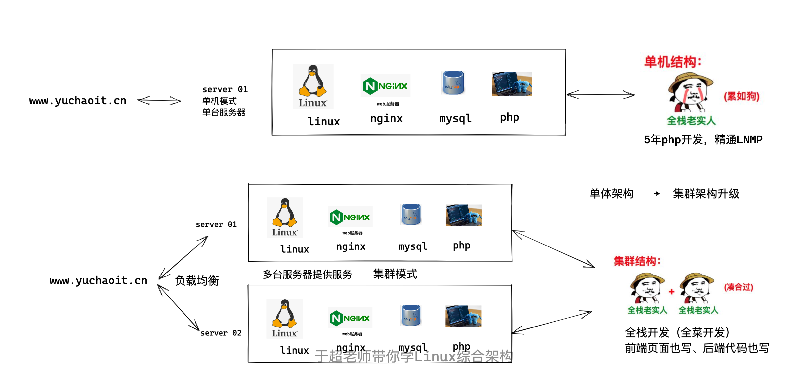
集群的特点：
扩展性好：集群只是单机的多个复制，没有改变单机的原有的代码结构，每次部署新节点只需要复制部署即可。
图解微服务（分布式）
- 微服务是指架构师在开发之前，设计的产品开发模式
- 分布式是指运维部署微服务代码的方式
虽说上述的集群已经很优秀了、稳定、高性能，但是从代码业务上来看，还有很大问题
- 每一个节点都是耦合性很高的，淘宝网的后端所有功能都揉在一个代码文件夹，并且被复制了很多个，造成资源浪费，因为运行了多次
简单说就是，老式的网站架构，在集群模式下
1.所有的功能被重复运行了很多次，如，用户中心系统2 ； 支付系统2 ; 订单系统*2；造成服务器资源浪费； 2.并且随着网站越来越复杂，所有功能耦合在一个单体代码中，必然是灾难，一环出错、环环出错 3.因此如今的企业应用开发模式，从诞生就是以微服务（分布式）模式开发，运维部署也以微服务（分布式）模式部署；
微服务（分布式）
分布式运维部署结构，就是指原本是一套单体的代码系统，被拆分为了很多个独立子系统，这每一个分布式结构的子系统，就被称为微服务‘。
每一个微服务系统，通过网络、远程的互相调用，再完成统一的功能（淘宝网的官网）。
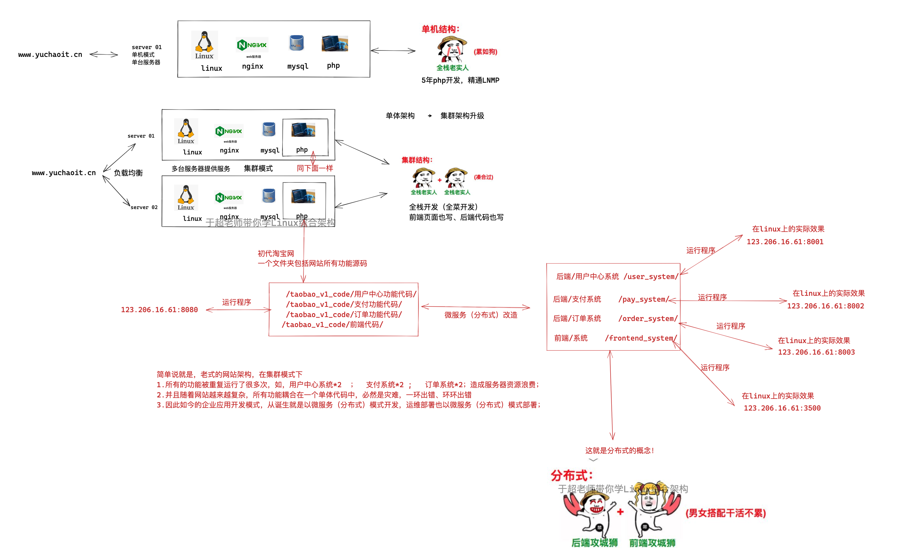
淘宝网的十年架构演进
大型网站都是由小型网站发展而来，网站架构也是一样，从小网站逐步演化，最开始小网站访问人数很少，一台服务器即可完成工作。
此时应用程序，数据库，文件等所有资源都在一台服务器，也就是我们常见的LAMP、LNMP单机，使用各种开源软件和一台普通的服务器即可运行网站。
单机架构
以淘宝作为例子。在网站最初时，应用数量与用户数都较少，可以把Tomcat(后端)和数据库部署在同一台服务器上。
浏览器往www.taobao.com发起请求时，首先经过DNS服务器（域名系统）把域名转换为实际IP地址10.102.4.1，浏览器转而访问该IP对应的Tomcat。
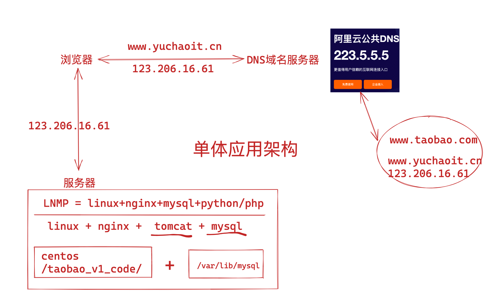
随着用户数的增长，Tomcat和数据库之间竞争资源，单机性能不足以支撑业务
第一次升级、tomcat和数据库分开了
因为tomcat是java写的，非常占内存资源，总是和数据库抢占磁盘资源、内存资源，导致服务器压力过大，网站解析、处理整体能力都很差。
因此让tomcat和数据库分开两台机器，显著提升各自的运行性能。
应用服务和数据库分离
随着网站业务的发展，用户量增多，一台服务器逐渐支撑不住，越来越多的用户访问导致网站响应速度变慢，越来越多的数据，导致存储空间不足。这时候应该把应用和数据分离，使用三台服务器的架构，分别运行应用服务器、文件服务器、数据库服务器。
这三台机器对硬件资源要求各不同，
- 应用服务器需要处理大量的业务逻辑，需要更强大，更快的CPU处理器
- 数据库服务器需要更快速的读写数据，因此需要更强大的磁盘和大内存
- 文件服务器要存储大量用户上传的文件，因此需要更大容量的硬盘。
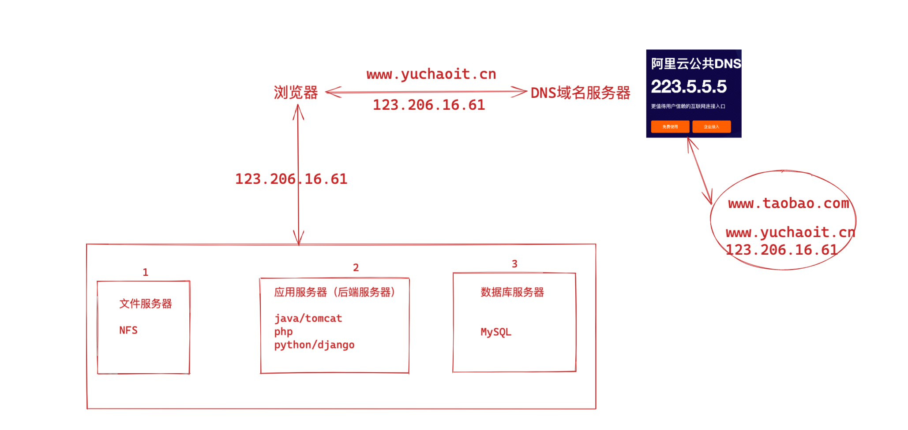
应用和数据分离后，不同作用的服务器承担不同的服务角色，各司其职，网站的并发处理能力和存储空间都得到了很大的改善，进一步支持网站业务。
但是随着公司发展，用户持续增长，网站此时架构又一次面临挑战，数据库压力太大，导致用户访问延迟，用户体验变差，老板又要拍板骂人了，于超老师需要对网站架构进一步优化。
第二次升级、引入本地缓存、分布式缓存
网站访问特点也逃不掉现实世界的二八定律：80%的业务访问集中在20%的商品数据上。
例如淘宝的用户最关注的都是成交量多，评价较好的商品；
很明显，对于网站的数据，就有热数据，冷数据之分，大部分的业务集中在一小部分数据上，那么如果把热门的数据缓存再内存中，是不是可以减轻数据库的访问压力，提高网站的整体访问效果呢，当然是可以。
PS：内存的I/O速度是远超于磁盘的
网站的缓存主要分两种：
- 缓存再应用服务器上的本地缓存（内存）
- 缓存放在专门的分布式缓存服务器上（单独的一台大内存服务器）
本地缓存的弊端
比如修改tomcat的参数、添加JVM缓存参数、或者在应用服务器部署memcached缓存数据库，也都可以。
本地缓存的访问更快，没有网络延时，但是应用服务器的内存有限，缓存的数据量有限制，而且会有缓存和应用程序争夺内存的情况。
分布式缓存的优点
远程分布式缓存可以采用集群的方案，部署较大内存的服务器作为专门的缓存服务器，可以在理论上实现内存不受限的扩容服务。当然这需要有成本代价。
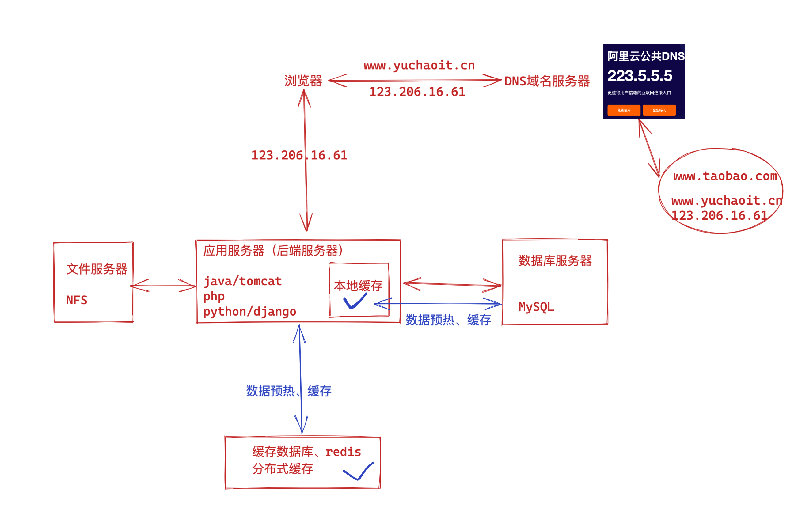
新的问题又来了
使用缓存后，数据库的访问压力得到有效的缓解，但是应用服务器在后续也有了瓶颈；
缓存抗住了绝大多数的访问请求，但是随着淘宝网的崛起，用户越来越多，并发压力更大了，网站的压力就集中在了tomcat这样的应用服务器上；
后端服务器解析速度越来越慢；
主要使用负载均衡集群方式改善。
第三次升级、引入反向代理、负载均衡
使用集群是网站解决高并发，海量请求的常见手段，俗话说三个臭皮匠，胜过诸葛亮。
一台服务器的处理能力，存储空间都会有瓶颈，此时压根不要企图再去换一个更强大的服务器，对于大型网站而言，无论多么强大的服务器，都满足不了业务增长的需求，此时你的做法应该是再增加一个臭皮匠，也就是增加一台服务器，去分担原有服务器的压力。
对于网站架构而言，通过增加机器的形式改善负载压力，就可以持续不断的改善系统性能，实现系统的可伸缩性。
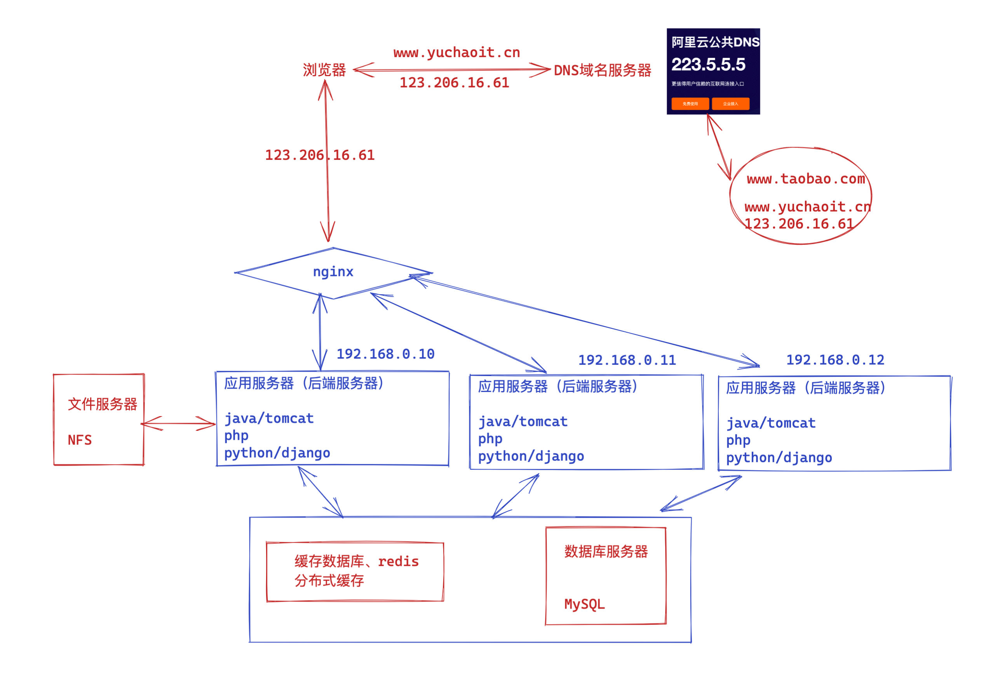
在很多台机器上，都部署tomcat、使用反向代理软件nginx，把请求均匀的分发给每一个tomcat。
假设tomcat本身最多支持1000个并发（1000个用户同时在线）；
Nginx最多支持50000个并发（支持5万个用户同时连接）；
那么nginx只要把5万个并发请求，转发给50个tomcat服务器就能扛得住这个流量；
通过负载均衡调度服务器，将用户的请求分发到应用服务器集群中的任何一台机器上，根据用户访问量，来决定增/删集群中的服务器，以此来解决应用服务器的压力。
涉及技术、nginx、haproxy、lvs等
问题又来了
既然理论上，只要不断增加负载均衡的节点，应用服务器的数量，后端就必然能扛得住更多的用户流量；
此时的压力就落到了谁身上？
数据库，此时数据库mysql、依然是单机，读写性能达到瓶颈。
第四次升级、数据库读写分离
网站在使用缓存后，使得大部分数据的读取操作，不通过数据库就可以访问完成，但是也会有一部分的读取操作（例如缓存未命中，缓存过期）和全部的写入操作需要访问数据库，在网站达到一定规模之后，数据库因为负载压力过高而成为网站瓶颈。
主从复制
目前主流的数据库软件都提供了主从热备功能 ，配置两台数据库的主从关系，可以将一台数据库的数据，同步更新到另一台机器上。
网站利用该功能，可以实现数据读写分离，减轻数据库负载压力。
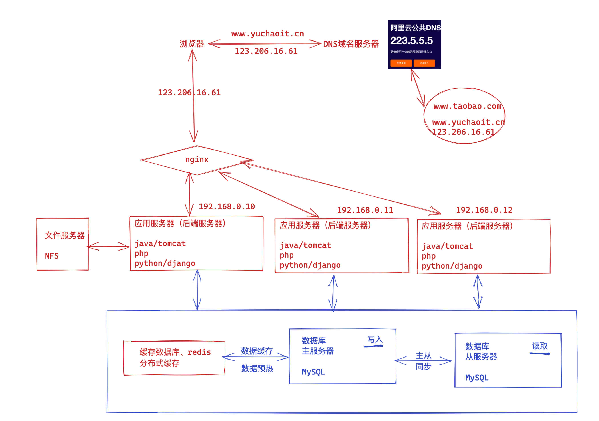
读写分离
数据库规划为读库（从库）；写库（主库）；
应用服务器进行写入操作的时候，访问主数据库，主数据库通过主从复制机制将数据更新同步到从数据库，这样当
应用服务器读取数据的时候，可以通过从库获取数据，以此实现数据读写分离；
针对不同的网站业务，读，写的操作比率，也是不一样的。
如电商类站点，用户浏览商品居多，读取居多；
博客类站点，用户写入数据居多，需要依次进行不同的优化调整。
读库可以有多个，通过主从同步技术把写库的数据，同步到所有的读库；
对于需要读取最新数据的场景，可以再从写库，同步到缓存中，确保可以通过缓存也能拿到最新数据；
这里的数据库拆分、主要是DBA的专业数据库运维工作内容，以及开发工程师要根据业务的拆分涉及，系统运维主要以配置数据库复制为主。
问题又来了
依然是随着淘宝网的发展，不仅是用户量、并发量更大了；
业务复杂性也更高了、如下圈出来的全都是淘宝网额外的功能
业务越来越多、不同业务之间的访问量、访问频率相差也太大，甚至有业务会对数据库竞争，相互影响性能，因此数据库瓶颈依然是个问题。
后续就是DBA级别的数据库优化架构了，主要是
- 数据库按业务分为多个数据库
- 数据表拆分
这就不在网站架构的讨论范畴了，因此不做讲解了
第五次升级、负载均衡升级
假设nginx能够支撑5万的用户并发，但是此时的淘宝网已经有50万的用户了，也就是入口的nginx也扛不住这个请求压力了，瓶颈此时出现在了nginx。
因此依然是采用负载均衡的理念，运行多个nginx来分摊这个集中式的请求压力；
入口此时发现被修改为了叫做LVS、或是F5这样的软件，它俩也是提供负载均衡能力的软件，但是性能上比nginx更强悍，支持更高的并发，单机的F5就能扛得住支持几十万的用户请求，但是价格昂贵，是一台硬件负载均衡设备，需要企业估值成本；
成本不允许，则可以使用开源技术，LVS替代F5、性能也足够强悍，也是提供负载均衡的能力。
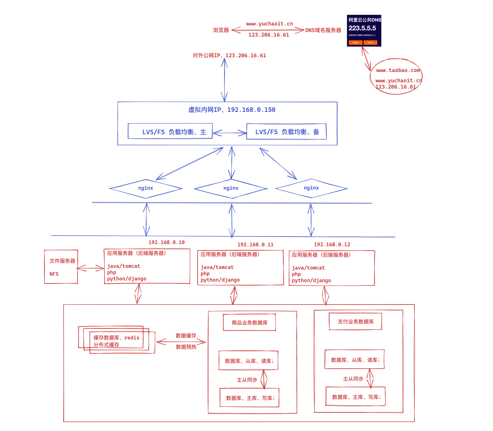
但是LVS是软件负载均衡，也就是linux上运行的一个程序而已，如果lvs服务器宕机了，会导致网站入口直接就挂了，因此需要实现高可用，常见的方案就是keepalived；
这套负载均衡+高可用技术，后面跟着于超老师学就好了，这里不再多叙述，了解架构理念即可。
第六次升级、DNS负载均衡
问题又来了（并发实在是太多了）
提示，服务器理论上，最大并发数是
>>> 2**48
281474976710656
每一条连接都是要消耗系统资源的，所以实际中可能会设置最大并发数来保证服务器的安全和稳定，所以这个理论最大并发数是不可能达到的。
实际中并发数和业务是直接相关的，服务器支持几十万连接是没问题的
由于LVS这套软件负载均衡技术，虽说并发数能达到几十万，但是淘宝实在是太挣钱了，老百姓花钱的能力太强了，淘宝网的用户已经达到千万、上亿级别了。
并且此时的服务器架构，已经是在全国不同的地区，有很多的机房了，并且用户也是分散在全国不同的地区，和服务器的距离各不相同；
新疆的用户访问淘宝网，请求如果是发给了杭州的淘宝服务器，那这个过程显然是太慢太慢了。。
你得让新疆的用户，访问淘宝网，这个请求发给了新疆周边的淘宝服务器、或者说找到一个离新疆最近的淘宝服务器（前提是，淘宝在新疆地区周边部署了机房），要不只能通过网络去找其他地区的服务器了。
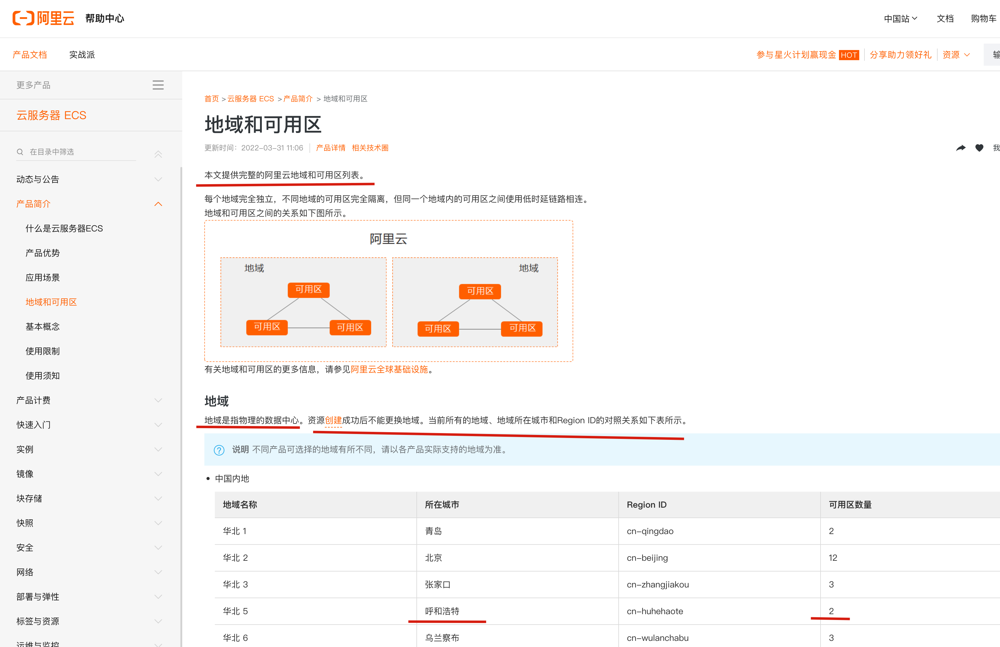
以阿里云官网提供的资料来看，如果是新疆的用户，离得最近的就是呼和浩特这个机房。
DNS负载均衡
在DNS服务器中可以配置一个域名、解析到多个IP地址，每个IP地址对应不同地区的机房服务器IP。
用户在不同的地区访问www.taobao.com时，DNS服务器会自动判断该用户所在地区，然后选择离他最近的淘宝服务器，返回其IP地址提供访问。
因此实现了DNS负载均衡，让用户可以访问离自己最近的淘宝网服务器，这样的话，只要增加机房，扩大服务器规模，无论你是千万、千亿级别的并发量，都可以负载均衡、分发给在全国各地的机房了，因此网站入口的并发再也不是问题。
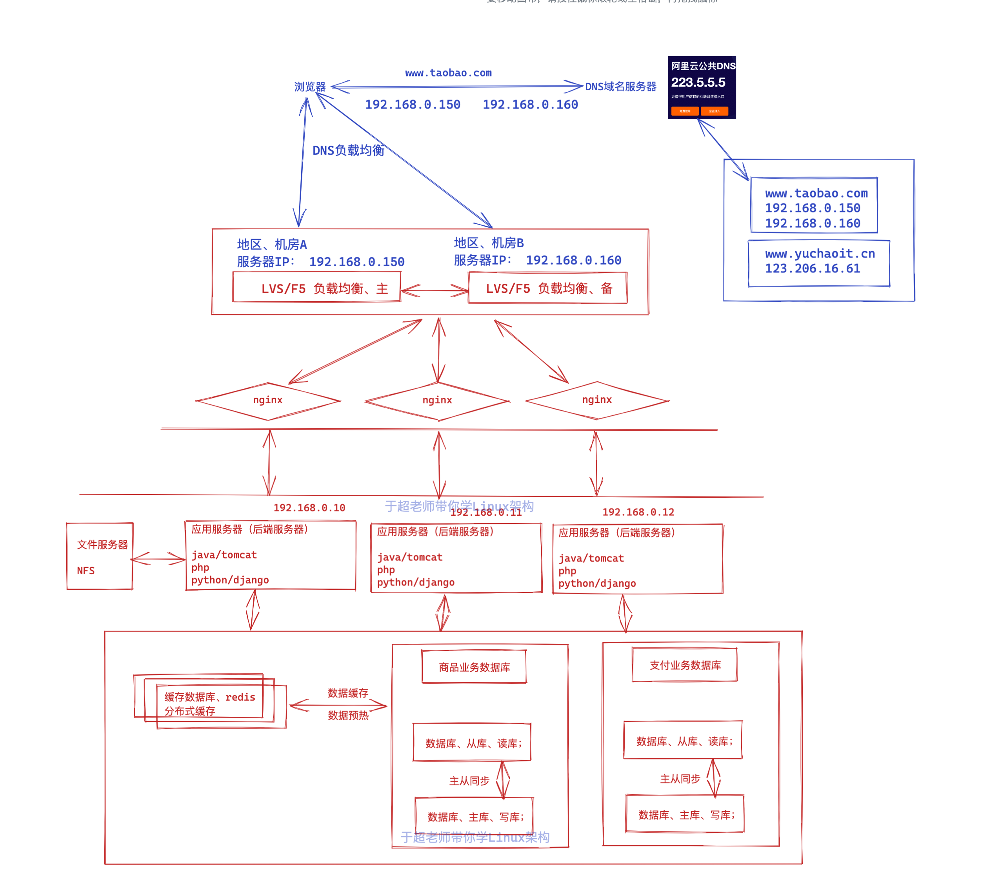
问题又来了
此时流量入口，不是什么大问题了，难题依然是在业务的复杂度上、业务发展、数据越来越恐怖，后续的优化、又是在数据库角度了
第N次升级
- 引入NoSQL数据库，redis
- 引入搜索引擎技术，ElasticSearch
- 代码架构升级、大功能拆为小功能，如淘宝网首页，业务拆分为
- 淘宝网代码
- 天猫超市代码
- 聚划算代码
- ...
- 复杂的功能抽象成微服务、置于淘宝网首页的诸多功能
- 淘宝网代码
- 天猫超市代码
- 聚划算代码
- 这些等等子系统都有一些共同的功能，如
- 用户数据管理系统
- 订单管理系统
- 支付系统
- 物流系统
- ...
- 这些系统在多个应用中都存在，代码没必要重复的运行、重复的单独写、维护，因此可以抽象为一个公共的服务来关系，这就是微服务的概念，此时多个应用，都可以统一使用这些公共的微服务。
- 这些微服务系统，都交给专门的团队去维护即可，目前市面上的微服务以阿里的Dubbo、SpringCLoud框架为主流。
- 当业务以微服务模式运行后、不仅开发工作更细化了、运维部署也更加频繁，且细化了
容器时代
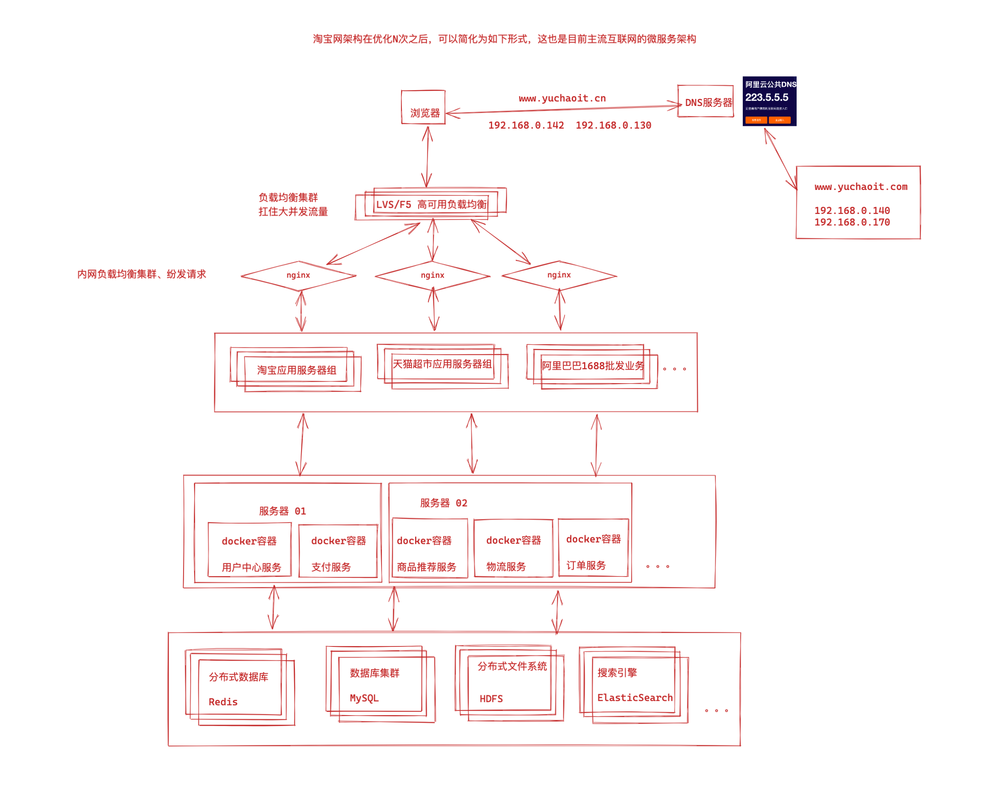
目前市面上最主流的就是通过docker容器技术管理微服务应用，每一个微服务也就是一个个应用程序，全部运行在docker容器里，当容器数量过多后，你必须进行容器编排管理。
目前最主流的docker管理平台肯定是Kubernetes了。
那置于容器是什么，未来于超老师再去讲解了。
以云平台承载系统
到这里，就不是关乎于网站架构的性能问题了，而是成本问题，机器的运行、管理成本，服务器很贵的，部门每个月都有支出预算，这个月服务器费用是50万，如何降低个10万？是不是需要合理的去规划机器的硬件配置，以及不用的机器，是否要回收，关机？
机房的电费也是很贵的。。
问题它又来了
使用容器化技术后服务动态扩缩容问题得以解决，但是物理机器还是需要公司自身来管理
在非大促的时候，还是需要闲置着大量的机器资源来应对大促，机器自身成本和运维成本都极高，资源利用率低
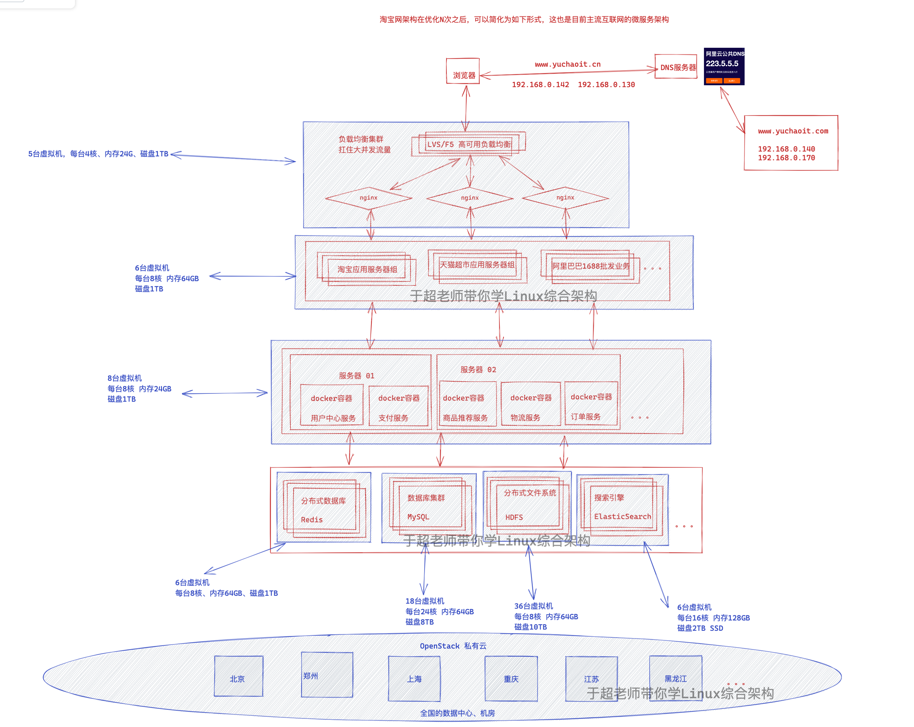
现在的企业，要么是用公有云（阿里、腾讯、华为云等），部署运行自己的应用；
要么就是自己有机房、搭建私有云平台，管理虚拟机。
核心都是在与系统部署在云平台上，利用云平台的海量机器资源，以及可以动态伸缩机器资源，可以在如大促的时候申请更多的机器硬件，结合docker、k8s快速部署业务；
在大促结束之后，在降低、释放资源，真正做到按需付费，资源利用率提高了，也很大的降低了运营成本。
云平台是什么
所谓的云平台，就是把海量机器资源，通过统一的资源管理，抽象为一个资源整体，在之上可按需动态申请硬件资源（如CPU、内存、网络等），并且之上提供通用的操作系统，提供常用的技术组件（如Hadoop技术栈，MPP数据库等）供用户使用，甚至提供开发好的应用，用户不需要关系应用内部使用了什么技术，就能够解决需求（如音视频转码服务、邮件服务、个人博客等）。
在云平台中会涉及如下几个概念：
- IaaS：基础设施即服务。对应于上面所说的机器资源统一为资源整体，可动态申请硬件资源的层面；
- PaaS：平台即服务。对应于上面所说的提供常用的技术组件方便系统的开发和维护；
- SaaS：软件即服务。对应于上面所说的提供开发好的应用或服务，按功能或性能要求付费。
架构师原则
- N+1设计。系统中的每个组件都应做到没有单点故障；
- 回滚设计。确保系统可以向前兼容，在系统升级时应能有办法回滚版本；
- 禁用设计。应该提供控制具体功能是否可用的配置，在系统出现故障时能够快速下线功能；
- 监控设计。在设计阶段就要考虑监控的手段；
- 多活数据中心设计。若系统需要极高的高可用，应考虑在多地实施数据中心进行多活，至少在一个机房断电的情况下系统依然可用；
- 采用成熟的技术。刚开发的或开源的技术往往存在很多隐藏的bug，出了问题没有商业支持可能会是一个灾难；
- 资源隔离设计。应避免单一业务占用全部资源；
- 架构应能水平扩展。系统只有做到能水平扩展，才能有效避免瓶颈问题；
- 非核心则购买。非核心功能若需要占用大量的研发资源才能解决，则考虑购买成熟的产品；
- 使用商用硬件。商用硬件能有效降低硬件故障的机率；
- 快速迭代。系统应该快速开发小功能模块，尽快上线进行验证，早日发现问题大大降低系统交付的风险；
- 无状态设计。服务接口应该做成无状态的，当前接口的访问不依赖于接口上次访问的状态。